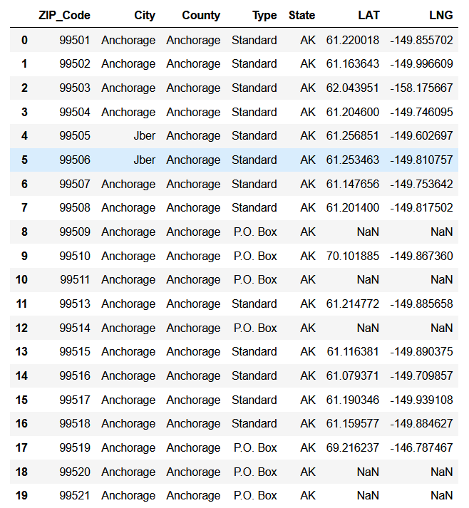

US Location Data (Phase 1)
OVERVIEW:
- This project is solely the exercise of gathering US location data to make into a resusable dataset.
- This is only Phase 1 of a 2-part project (Phase 1 & 2)
- This documents the gathering, cleaning, and storage process for building the dataset.
- The Phase 1 dataset will include the following fields:
- ZIP_Code: 5-digit code used by the United States Postal Service (USPS)
- City
- County
- State: 50 states, plus Washington DC, Puerto Rico and some US territories.
- Type: Standard or P.O. Box
- LAT: Latitude, DD (decimal degrees) format
- LNG: Longitude, DD format

CONCLUSIONS:
Phase 1 for building a dataset of US locations:
- 41,115 zip codes were collected
- 7944 geographical locations are missing for each latitude and longitude value
- 45 values each for City, County, Type, and State are missing
- File ('US_zip_city_geo_data.xlsx') has been generated for use in Phase 2.